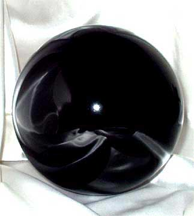

LA SFERA
OSCURA
Una sfera di cristallo dal
diametro di 25 cm. e dal peso di 3 libbre piena di materia oscura.

STORIA
La Sfera Oscura è uno degli artefatti areliani legata alla caduta dell'Impero del Nordor. A differenza degli altri artefatti, questi oggetti sono legati al Demone di Gash e fungono da catalizzatori per il suo potere in una determinata zona territoriale. Oltre ai poteri specifici, quindi, questi artefatti posseggono poteri caratteristici per il legame con questa potente entità demoniaca.
POTERI
DEMONIACI
Questo artefatto è stato
creato utilizzando parte del sangue e dell'energia vitale del Demone di Gash.
Per tale motivo l'artefatto possiede, oltre ai suoi comuni poteri, i seguenti
poteri supplementari:
Catalizzatore Demoniaco (Potere Costante Localizzato): Se questo artefatto è collocato nell'area ove è stato effettuato il rituale oscuro per maledire una terra od un possedimento lo stesso attiverà costantemente questo potere permettendo al Demone di Gash di aprire quelli che sono definiti i Portali del Male. Si tratta di portali magici che l'entità utilizza per inviare i suoi emissari laddove occorre. Se l'artefatto è spostato dalla suddetta zona lo stesso si disattiverà e questo potere sarà sospeso. Sembra che possano essere aperti solo di notte, quando il disco solare non è più visibile. Questi portali si pensa conducano direttamente nella residenza dell'entità demoniaca ma potenti studiosi di magia affermano che il passaggio è mortale per cui solo esseri costruiti e non morti possono attraversarli senza danni. L'artefatto permette l'apertura dei portali in qualsiasi parte del territorio sottoposto alla maleficio, fatta eccezione per le zone consacrate ad una determinata divinità (si pensi ai Templi ed a luoghi similari) ed alle zone protette magicamente contro il passaggio interdimensionale. Ogni notte l'entità può aprire un solo portale per ogni singolo artefatto. Ogni portale del male può permettere il trasporto di un ammontare massimo di dadi vita/livelli di creature pari a 20 che siano di taglia massima Large.
Conoscenza Demoniaca (Potere Costante): Se questo artefatto è in possesso di una qualsiasi creatura l'entità demoniaca ne è immediatamente a conoscenza. In particolare, l'entità verrà a conoscenza delle informazioni principali riguardanti la creatura e la sua storia (ivi compresi nome, classe, livello di esperienza) e la sua costante ubicazione fino a che resterà in possesso dell'artefatto. Questo potere si considera a tutti gli effetti come un incantesimo divinatorio del quinto livello di potere. Creature di origine diabolica o demoniaca non attivano questo potere. Questo potere non è attivato qualora l'artefatto si trova in un diverso piano dimensionale rispetto a quello occupato dall'entità demoniaca.
Richiamo Oscuro (Potere Costante): I servitori dell'entità possono avvertire la presenza fisica dell'artefatto. Solo i servitori della tipologia Dark Emissary possono avvertirne la presenza. Costoro, in particolare ne avvertiranno la presenza qualora siano presenti entro 30 metri dall'artefatto. Queste creature percepiranno immediatamente oltre alla presenza dell'artefatto anche la sua distanza e direzione.
POTERI SPECIFICI
La Sfera Oscura è un artefatto di bassa potenza carico di energia negativa connessi alla scuola di magia necromancy.
Invocati:
Infondere Energia Negativa, L'artefatto può infondere energia negativa in una qualsiasi arma da corpo a corpo. L'attivazione di questo potere richiede un'azione complessa dalla durata di un intero round ed il mantenimento della concentrazione. L'arma con la quale chi attiva il potere tocca la sfera oscura si considererà incantata per 24 ore con l'incantamento maggiore of Negative Energy [link]. Questo potere può essere utilizzato una volta ogni 24 ore.
Parola del Dolore, Attraverso l'artefatto il possessore può lanciare una volta al giorno l'incantesimo clericale del 5° livello di potere Word of Pain. Si consideri a tutti gli effetti un'azione assimilabile al lancio del relativo incantesimo che richiede di maneggiare contestualmente l'artefatto. La magia si considererà lanciata al 12° livello di lancio.
Raggio di Energia Negativa, Attraverso l'artefatto il possessore può lanciare una volta al giorno l'incantesimo dei maghi del 3° livello di potere Arcane Bolt of Darkness. Si consideri a tutti gli effetti un'azione assimilabile al lancio del relativo incantesimo che richiede di maneggiare contestualmente l'artefatto. La magia si considererà lanciata al 12° livello di lancio.
Casuale:
Ritorno,
Al termine di ogni mese nel quale l'artefatto non risulta in possesso di alcuna
creatura vi è il 25% delle possibilità che lo stesso svanisca riapparendo in
prossimità dell'entità demoniaca alla quale è legato. Questo potere non si
attiverà qualora l'artefatto sia attivo con la modalità Catalizzatore Demoniaco
oppure si trovi in un piano dimensionale esterno demoniaco.
Maledizione:
Maledizione Oscura,
Ai poteri dell'artefatto è
connessa una maledizione, la maledizione non è connessa ai poteri demoniaci
Conoscenza Demoniaca e Richiamo Oscuro.
Lo stesso scaglierà in un'area di
15 metri di diametro una maledizione su tutte le creature presenti ad eccezione
di quelle di origine diabolica o demoniaca.
Si consideri a tutti gli effetti
una magia di Bestow Curse che si lanciata al 12° livello di lancio avente sempre
il seguente effetto:
Sfortuna
Nera:
La
creatura avrà il doppio delle possibilità di effettuare fallimenti
critici in ogni azione (per esempio sugli attacchi e nel lancio delle
magie effettuerà acritici con 1 e 2 sul dado da venti, nelle prove sulle
competenze effettuerà acritici con 19 e 20 sul dado da venti, nelle
prove di produzione sarà considerato fallimento critico un risultato da
91 a 100 sul dado percentuale, e così via...).
Ad ogni
attivazione del potere sarà scagliata una nuova maledizione (quando è in
funzione un potere costante come il potere Catalizzatore Demoniaco, la
maledizione colpirà costantemente, ma una sola volta, chiunque entri nell'area
d'effetto). Si noti che già è sotto gli effetti di questa maledizione non sarà
nuovamente maledetta dall'artefatto.
Artifact Possession:
Tentativo di dominio: La Sfera Oscura prova a dominare chi la utilizza ogni volta che viene attivato un potere specifico invocato.
Prova di dominio: La Sfera Oscura ha una personalità pari a 30 punti mentre la personalità di un personaggio è data dalla somma di Intelligenza Saggezza e Livello di Esperienza. Ad ogni tentativo di impossessamento entrambi tirano 1d20 ed aggiungono la loro personalità, se la Sfera Oscura vince sarà riuscita a dominare il suo possessore.
Effetti permanenti dell'impossessamento: Quando la Sfera Oscura si impossessa di una creatura per la prima volta questa diviene incredibilmente gelosa dell'artefatto, lo ritiene di sua proprietà e si adopera nel modo più appropriato per proteggerlo e difenderlo. Dovrà fare in modo di mantenerne il possesso e farà di tutto per poterlo utilizzare, al tempo stesso impedirà ad altri di usarlo, nasconderlo e perfino di vederlo. Questa ossessione perdurerà fino alla distruzione della Sfera Oscura, alla morte della creatura o fino a che la Sfera Oscura non riesca ad impossessarti di un'altra creatura. Si noti che la Sfera Oscura è un artefatto rudimentale che non fa differenza fra chi lo utilizza per cui proverà ad impossessarsi di tutti coloro siano in grado di utilizzarlo e ci provino. La creatura può essere liberata anche con una magia di "Remove Curse".
Modo di distruzione:
L'unico modo di distruggere la Sfera Oscura è quella di porla nelle mani di una creatura angelica del rango minimo pari a Luce Angelica e farle utilizzare il potere di irradiare energia positiva. In questo modo il calderone si sgretolerà tra le mani della creatura angelica.
STUDIARE L'ARTEFATTO
L'artefatto può essere studiato utilizzando la competenza Arcanology. Quando il
personaggio decide di utilizzare questa competenza deve essere in possesso
dell'artefatto potendolo vedere e toccare. Lo studio di per sé non attiva il
potere Conoscenza
Demoniaca anche se questo
potere potrà essere attivato involontariamente in fase di studio. Al primo
studio che si considera
conoscenza preliminare il
personaggio scoprirà i vari campi e i poteri generici. Successivamente, quindi,
il personaggio dovrà scegliere un campo di studio tra i seguenti nel quale
avanzare:
1) STORIA
2) POTERI DEMONIACI
Conoscenza preliminare:
Ammontare, Denominazione e Tipologia dei Poteri. Per ogni potere è necessario
che il personaggio prosegua con uno studio specifico interno al singolo potere.
3) POTERI SPECIFICI
Conoscenza preliminare:
L'artefatto è dotato di tre diversi poteri basati sull'energia negativa connessi
alla scuola di magia necromancy.
Conoscenza base:
Conoscenza di un potere determinato casualmente.
Conoscenza approfondita:
Conoscenza di un secondo potere determinato casualmente.
Conoscenza avanzata:
Conoscenza di un terzo potere determinato casualmente.
Conoscenza profonda:
Conoscenza del quarto potere.
4) MALEDIZIONE
5) POSSESSIONE
Il metodo di distruzione non può essere studiato se non quando il personaggio ha
completato interamente lo studio dell'artefatto almeno in quattro dei suddetti
campi. Quando il personaggio effettua lo studio costui impiega un
tempo base di 5 giorni di lavoro
al termine dei quali costui effettuerà una prova nella competenza alla quale
saranno applicati i seguenti modificatori:
Modificatore base
dell'artefatto: - 1
Per ogni 5 giorni di
lavoro supplementare: +1
(fino ad un massimo di +2)
Se il mago riesce in una
prova nella competenza Sage Knowledge Arcanology:
+3
Conoscenza preliminare:
Nessun Modificatore
Conoscenza base: - 1
Conoscenza approfondita:
- 2
Conoscenza avanzata:
- 3
Conoscenza profonda:
- 4
Metodo di distruzione
(solo dopo aver completato
la conoscenza in quattro settori): - 4
Se il personaggio riesce nella prova richiesta otterrà la conoscenza e potrà
procedere ad un livello di conoscenza superiore. Se il personaggio sbaglia la
prova richiesta potrà ripeterla nuovamente. Se il personaggio sbaglia di 5 o più
punti la prova costui potrà ripeterla ma otterrà uno dei seguenti effetti
selezionato casualemente: 1) L'artefatto potrà effettuare una prova di
possessione nei confronti del personaggio; 2) L'artefatto attiverà la sua
maledizione nei confronti del personaggio. Se il personaggio fallisce con un
fallimento critico costui fallirà ottenendo uno dei suddetti effetti e non potrà
procedere nel medesimo campo prima del raggiungimento del successivo livello di
esperienza. Se il personaggio riesce con un successo critico costui scoprirà
anche il livello di conoscenza immediatamente successivo (ma solo nell'ambito
dello stesso campo).